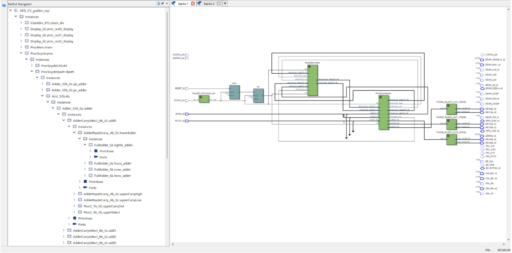

Single Cycle Processor and Accumulator Accelerator on FPGA
Project Description
[Add project description here - This project involved designing and implementing a single-cycle processor architecture on an FPGA platform, along with a specialized accumulator accelerator for enhanced computational performance. The design demonstrates fundamental computer architecture concepts including instruction fetch, decode, execute cycles, and hardware acceleration techniques.]
Technical Overview
[Add technical details here - Include information about the processor architecture, instruction set, FPGA implementation details, accumulator accelerator design, performance metrics, and any optimization techniques used.]
Project Details
- Project Name: Single Cycle Processor and Accumulator Accelerator
- Course: ECE 2300: Digital Logic and Computer Organization
- Project Type: FPGA Design, Verilog Implementation, Computer Architecture
- Project Timeline: [Add timeline here - e.g., Fall 2024]
- Tools Used: Verilog, Intel Quartus Prime, FPGA Development Board
- Key Concepts: Single-cycle processor design, instruction set architecture, hardware acceleration
Documentation and Implementation
[Add documentation here - Include block diagrams, timing diagrams, test results, and any relevant code snippets or schematics]
Block Diagram
[Add processor block diagram image here]
Implementation Results
[Add FPGA synthesis results, timing analysis, resource utilization]
Performance Analysis
[Add performance metrics, comparison with baseline, acceleration factors]